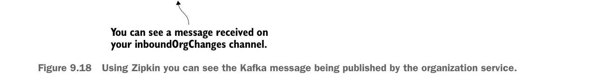

Bạn có thể thấy một thông điệp được nhận trên kênh inboundOrgChanges của bạn.

Dùng Zipkin, bạn có thể thấy thông điệp Kafka được publish bởi organization service.
Giờ bạn đã tìm được giao dịch licensing service mục tiêu, bạn có thể đi sâu vào giao dịch đó. Hình 9.18 cho thấy kết quả của lần đi sâu này.
Cho đến giờ bạn đã dùng Zipkin để trace các lời gọi HTTP và messaging từ bên trong các service của mình. Tuy nhiên, nếu bạn muốn thực hiện trace ra các dịch vụ bên thứ ba chưa được Zipkin instrument thì sao? Ví dụ, nếu bạn muốn lấy thông tin tracing và thời gian cho một lời gọi Redis hoặc Postgres SQL cụ thể thì sao? May mắn là Spring Cloud Sleuth và Zipkin cho phép bạn thêm span tùy chỉnh vào giao dịch để trace thời gian thực thi liên quan tới các lời gọi bên thứ ba này.
9.3.8 Thêm span tùy chỉnh
Thêm span tùy chỉnh trong Zipkin cực kỳ dễ. Bạn có thể bắt đầu bằng cách thêm span tùy chỉnh vào licensing service để trace thời gian lấy dữ liệu từ Redis. Sau đó bạn sẽ thêm span tùy chỉnh vào organization service để xem mất bao lâu để truy xuất dữ liệu từ cơ sở dữ liệu organization.
Để thêm span tùy chỉnh vào lời gọi Redis của licensing service, bạn sẽ instrument class licensing-service/src/main/java/com/thoughtmechanix/licenses/clients/OrganizationRestTemplateClient.java. Trong class này bạn sẽ instrument phương thức checkRedisCache(). Listing sau trình bày đoạn mã này.
Gắn instrumentation cho lời gọi đọc dữ liệu licensing từ Redis
import org.springframework.cloud.sleuth.Tracer;
//Rest of imports removed for conciseness
@Component
public class OrganizationRestTemplateClient {
@Autowired
RestTemplate restTemplate;
@Autowired
Tracer tracer;
@Autowired
OrganizationRedisRepository orgRedisRepo;Lớp Tracer được dùng để truy cập programmatically thông tin trace Spring Cloud Sleuth.